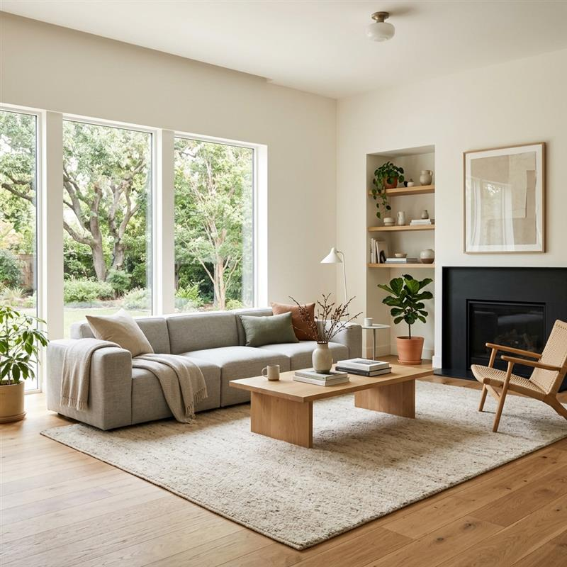
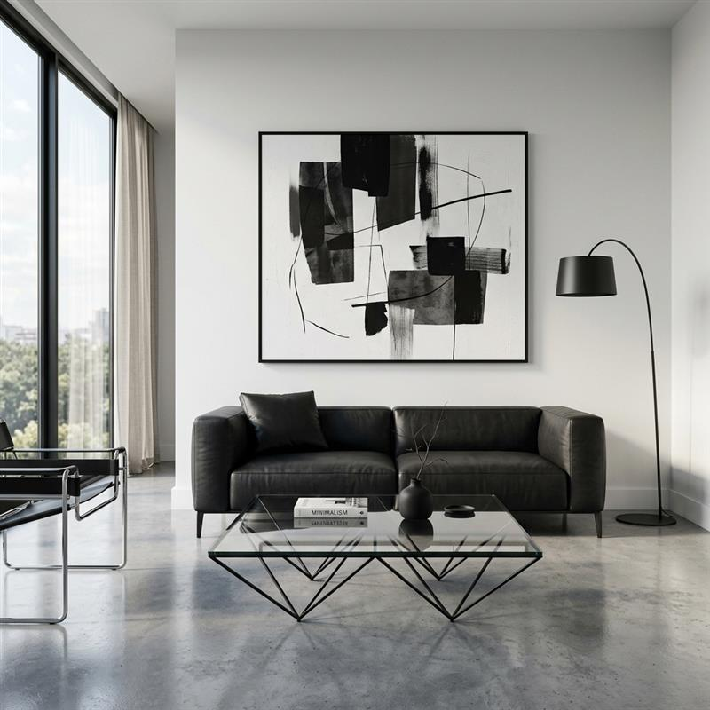
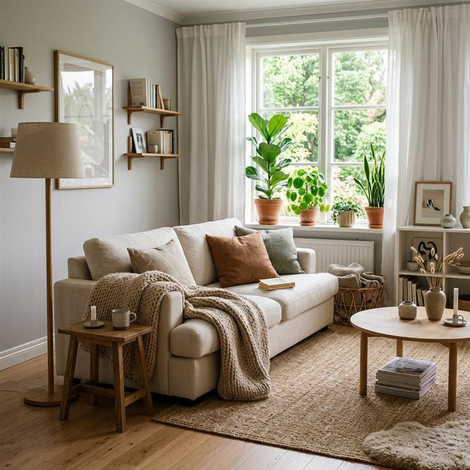

Modern Minimalist vs. Scandinavian Design: What’s the Real Difference? (Complete Living Room Guide)
Let’s be honest. If you are staring at an empty living room or endlessly scrolling through your Pinterest feed, you have probably noticed a major trend. Everyone seems to be obsessed with clean, uncluttered, and beautiful spaces.
But as you look closer at these stunning photos, a question pops up: Are you looking at modern minimalist interior design, or is it Scandinavian design?
At first glance, the lines blur. Both styles champion the idea that "less is more." They both hate clutter, love functional living room furniture, and embrace plenty of breathing room. However, the feeling you get when you walk into these rooms is completely different. One feels like a sleek, high-end art gallery, while the other feels like a warm hug on a rainy Sunday.
If you are planning a room makeover and want to know exactly how to pull off these looks, you are in the right place. In this complete guide, we are breaking down modern minimalist vs Scandinavian design so you can finally confidently choose the vibe that fits your home.

Quick Comparison: Minimalist vs Nordic Style
Before we dive deep, let's look at the basic DNA of both styles. If you are ever confused while shopping for neutral living room decor ideas, keep this cheat sheet handy!
| Feature | Modern Minimalist Design | Scandinavian Design |
|---|---|---|
| Core Vibe | "Less is more." Sleek, deliberate, and bold. | "Hygge" (cozy). Warm, inviting, and livable. |
| Color Palette | High contrast. Black, stark white, cool grays. | Soft and earthy. Creams, muted pastels, light wood. |
| Materials | Glass, chrome, polished concrete, steel. | Natural wood (ash, pine), wool, linen, sheepskin. |
| Furniture | Low-profile, geometric, sharp lines. | Ergonomic, organic curves, tapered wooden legs. |
| Focus | Eliminating the unnecessary; visual drama. | Everyday comfort, light, and connection to nature. |
What is Modern Minimalist Design?
Modern minimalist interior design is exactly what it sounds like: stripping a room down to its absolute essentials. Rooted in early 20th-century modernism and heavily influenced by traditional Japanese design, minimalism is all about form, function, and negative space.
In a minimalist room, nothing is there just for the sake of decoration. Every single piece of functional living room furniture must earn its keep. The result is a space that feels incredibly airy, highly sophisticated, and purposefully dramatic.
Key Features of Modern Minimalism:
- Stark Color Palettes: Think a crisp white room anchored by a single, bold black leather sofa.
- Sleek Surfaces: You will see a lot of reflective surfaces like glass coffee tables, polished stone, and stainless steel accents.
- Sharp, Clean Lines: Furniture tends to be boxy, low-to-the-ground, and highly geometric.
- The Power of "Empty": The space between the furniture is just as important as the furniture itself.
Best Use Cases:
Minimalism is perfect for urban lofts, people who thrive in highly organized, clutter-free environments, and anyone wanting a high-end, sophisticated aesthetic.
Expert Tip: If you want to start small, check out our guide on 10 Smart Living Room Decor Ideas That Instantly Upgrade Your Space to see how a few simple swaps can declutter your room.
To genuinely nail this vibe, prioritize statement pieces that command attention without crowding the room. A clear, geometric glass table acts as the perfect, weightless anchor.
Recommended: Modern Tempered Glass Minimalist Coffee Table

What is Scandinavian Design?
If modern minimalism is a sharp tailored suit, Scandinavian interior design style is your favorite chunky knit sweater.
Originating in the Nordic countries (Sweden, Norway, Denmark, and Finland), this style was born out of necessity. Because winters in these regions are long, dark, and freezing, the interiors needed to be bright, warm, and uplifting. Scandinavian living room decor focuses on maximizing light and creating a sense of Hygge (a Danish word roughly translating to a mood of coziness and comfortable conviviality).
Key Features of Scandinavian Design:
- Warm, Soft Neutrals: Instead of stark white, you'll see creamy off-whites, soft grays, and muted earth tones like sage green or pale blush.
- Abundant Natural Wood: Light woods like beech, ash, and pine are everywhere—from the floors to the furniture legs.
- Cozy Textures: Layering is key! Think faux fur throws, wool rugs, and linen cushions.
- Nature Inside: Houseplants are practically mandatory to bring life into the space.
Why it Feels So Cozy:
It perfectly balances the uncluttered philosophy of minimalism with the undeniable human need for warmth and comfort. It’s practical, but it never feels sterile.
To bring lasting hygge into your home, begin by layering your lighting. Harsh, clinical overhead lights instantly ruin the Nordic mood; opt for warm, standing lamps instead.
Recommended: Natural Wood Tripod Floor Lamp with Linen Shade

The Key Differences: Breaking Down the Details
Now that we know what they are, let's look at the specific differences when comparing minimalist vs Nordic style room by room.
1. Colors: Bold Contrast vs. Soft Neutrals
A modern minimalist room relies on high contrast. A classic example is a stark white wall against a matte black entertainment center. It’s dramatic. Scandinavian design relies on low contrast. The colors flow into one another—a cream sofa sitting on a beige rug against a very light grey wall. It is soothing to the eyes.
2. Furniture Style and Materials
Minimalist furniture often features man-made materials like chrome, steel, and acrylic, designed with rigid, straight lines. Scandi furniture almost exclusively uses natural, light wood. The edges are often rounded, soft, and organic, featuring iconic tapered wooden legs.
3. Texture and Warmth
If you have a cold, bare floor, a minimalist might leave it bare to appreciate the architecture, or place a very thin, flat-weave rug. A Scandinavian designer will immediately throw down a thick, plush wool rug or a faux sheepskin to warm up the room. Texture is the secret weapon of a cozy minimalist living room.
4. Lighting Strategies
Minimalist lighting is usually structural and striking—think recessed lighting or a single, sharp metal chandelier that looks like modern art. Scandinavian lighting is all about layering warm pools of light. They use multiple table lamps, floor lamps with fabric shades, and candles to create a soft glow.
Which Style is Better for Your Living Room?
So, which of these modern home decor trends for 2026 should you actually choose? It comes down to three main factors:
1. Your Space
If you are looking for small living room design ideas, both work beautifully because they reduce visual clutter. However, if your space gets very little natural sunlight, Scandinavian design is usually the better choice. The warm woods and layered textures will stop the dark room from feeling like a cold cave.
2. Your Lifestyle
Do you have young kids or pets? Scandinavian style tends to be more forgiving. The textured rugs and natural woods hide everyday wear-and-tear much better than the pristine glass tables and stark white rugs of pure minimalism. If you live alone or are a strict neat-freak who loves wiping down counters, modern minimalism will bring you immense peace.
3. Your Budget
You can do both on a budget, but they have different entry points. Because Scandi design is heavily championed by brands like IKEA, finding affordable, good-looking Nordic pieces is very easy. Minimalism, because it relies on having very few pieces, often requires those pieces to be high-quality, architectural investments to look right.
The distinction between an empty room and a curated sanctuary is often what you place on your walls. A cohesive triptych bridges the gap perfectly.
Recommended: Set of 3 Neutral Minimalist Canvas Prints
Conclusion: Finding Your Perfect Balance
When it comes to the battle of modern minimalist vs Scandinavian design, there is no wrong answer.
If you crave a sleek, dramatic, and fiercely uncluttered home that looks like it belongs in a magazine, embrace modern minimalism. If you want a space that is clean and organized, but still feels like a cozy, inviting retreat from the world, Scandinavian design is your winner.
And here is a secret: you don't actually have to choose just one! The hottest trend right now is blending the two, creating a "warm minimalist" space that takes the best parts of both.
Which style are you leaning towards for your living room makeover? Let me know in the comments below!
Frequently Asked Questions (People Also Ask)
Can you mix Scandinavian and minimalist design?
Absolutely! Mixing these two styles results in a look often referred to as "Warm Minimalism" or even "Japandi" (when mixed with Japanese minimalism). You can keep the strict, clean lines of minimalist furniture but execute them using the warm woods and soft textures of Scandinavian design.
Is Scandinavian design still a modern home decor trend in 2026?
Yes. Because Scandinavian design is built on functionality, natural light, and comfort rather than flashy gimmicks, it is considered a timeless aesthetic. It continues to evolve by incorporating more sustainable materials, but the core "hygge" vibe isn't going anywhere.
How do I make my minimalist living room feel warm?
To stop a minimalist room from feeling cold or clinical, introduce organic elements. Add a large, sculptural potted plant (like a Bird of Paradise or Ficus tree), use warm-toned LED bulbs in your lamps, and swap out one harsh material (like a glass table) for a natural one (like a solid stone or wood table).
What are the rules of a minimalist living room?
The main rule is intentionality. Keep surfaces clear, hide cables and everyday clutter in closed storage, limit your color palette to 2-3 main colors, and ensure every piece of furniture serves a clear, practical purpose.